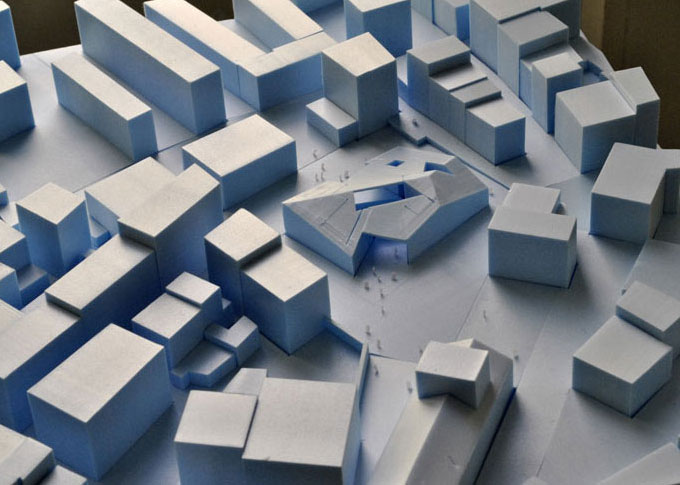
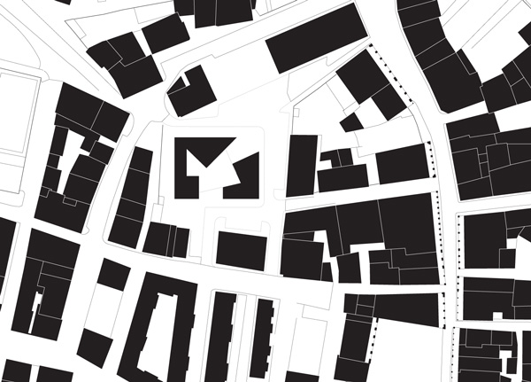
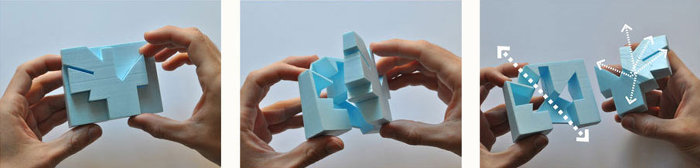
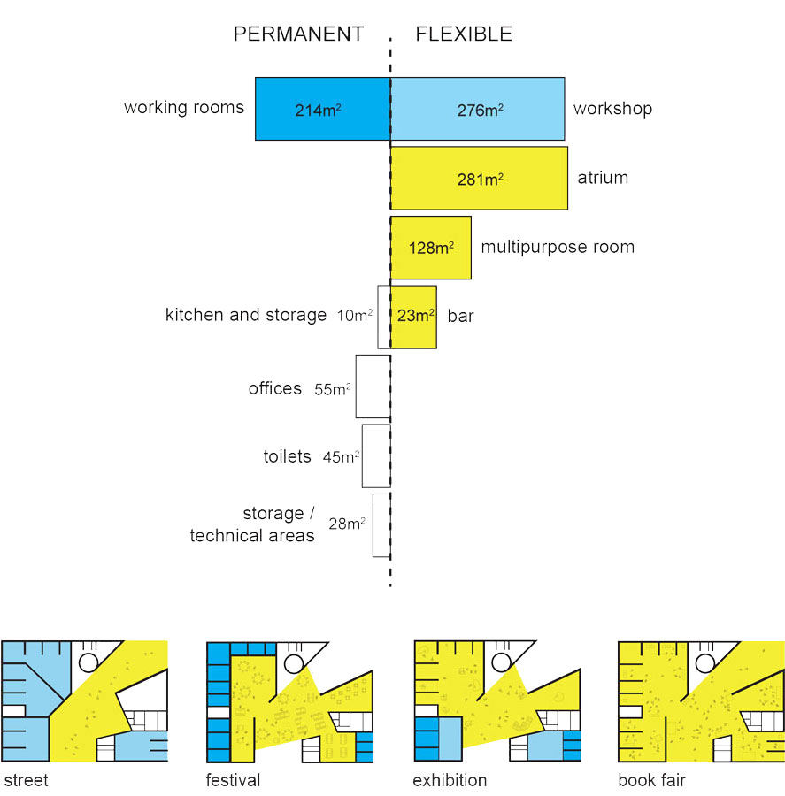
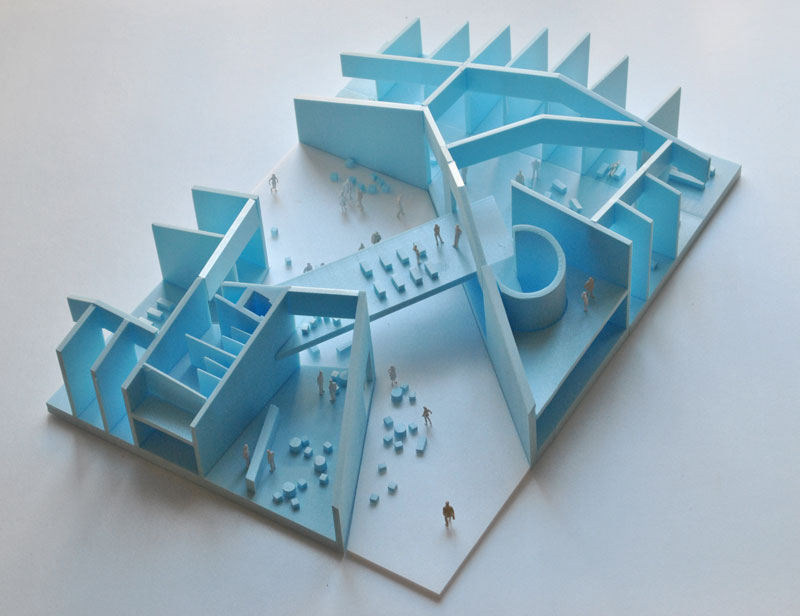
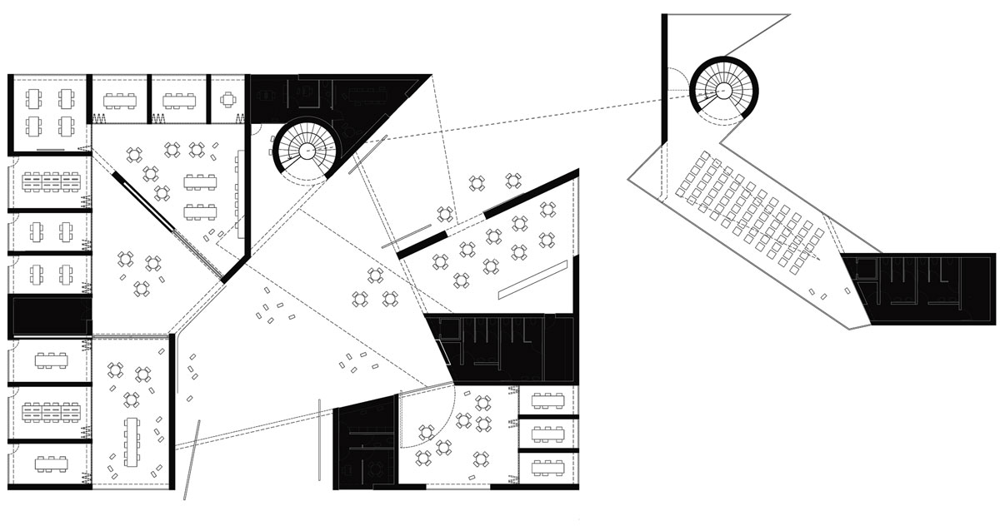
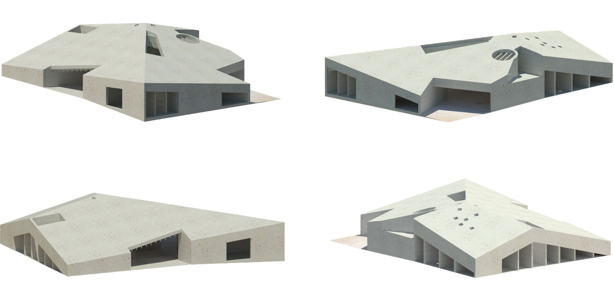

Una Casa Abierta
FORA + Beth Hughes
Competition - Civic Centre - Reinosa - 2013

Introduction
At a moment when we face a growing privatization of the public space, the design for a new meeting point in Reinosa acquires significant importance, contradicting this trend and equipping the city with a new civic space open to all its inhabitants.
The freedom offered by the street - as a generator of livelihood and spontaneous encounters – is irreplaceable.
The diversity and plurality of activities, associations and forms of expression, will find in the new civic space a common ground, all sheltered under the same roof: a house open to the street, the sky and all the neighbours.
Urban Context
The site of the old market is a meeting point in the city, a space of positive encounter between the old Reinosa and the periphery. The spacious site that resulted from the market's disappearance represents a unique opportunity to offer the city a programmed public space with singular scale and characteristics.
The new civic centre capitalizes on its location and site scale, consolidating a perimeter of meeting spaces organized around the atrium: a programmed street that continues the existing urban fabric, exposing the building's interior to the whole community.
This public crossing of the building transforms the main atrium into a covered square animated by the different activities taking place around it.


Program
The brief´s main requirement is the creation of a multifunctional space that shelters the different activities of the Reinosian community. In this sense, the program for the civic centre is divided into two categories – permanent and flexible – assuming beforehand the permeability between these two in order to achieve a space that is adjustable to the needs and desires of the neighbours over time.
This differentiation of the program in categories and scale finds its formalization in a honeycombed structure with a perimeter of smaller rooms housing the permanent part of the program - as it reaches the centre, this honeycombed structure gradually increases in size allowing for bigger rooms to be occupied by the flexible program.
Placing the permanent program in the perimeter and the permeability of the partitions between the different rooms enables the interior space to grow or shrink, transform and adapt itself to the different activities that the community wants to celebrate in its new civic centre.



Volume
The volume reinterprets the morphology of the context nevertheless maintaining its exceptional character within the urban fabric.
The sloped roof determines a built perimeter with a variable height adapting itself to the existing buildings and therefore minimizing the impact of the new volume.
The two entrances are excavated from the building's volume, inviting the passer-by to enter and cross the building or simply stay in its interior and enjoy the activities taking place.

Team:
João Moura Fagulha, João Prates Ruivo,
Raquel Maria Oliveira,
Beth Hughes.
Client: Excmo. Ayuntamiento de Reinosa.